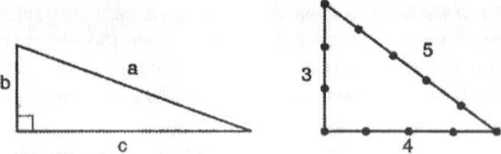

Pisagor Teoremi ve sihirli üçgenin özel durumu.
L Pisagor teoremi, bir dik üçgende hipotenüsün karesi dik kenarların kareleri toplamına eşittir. Örneğin 3, 4, 5 üçgeninde; 3"' + 4'+ + (9 + 16 = 25)
L Pisagor teoremi, bir dik üçgende hipotenüsün karesi dik kenarların kareleri toplamına eşittir. Örneğin 3, 4, 5 üçgeninde; 3"' + 4'+ + (9 + 16 = 25)

Öklit'in orijinal Önermesinde paralel değil paraleller denmektedir. Bu tarif 18. yüzyılda İskoç matematikçi John Playtair'e aittir.
Gerçekte Güneş, Ay'dan 400 kat daha uzaktır. Dünya-Güneş arası 150, 000, 000 km, Dünya-Ay arası 384,000 km'dir.
Güneş'in gerçek çapı (1,400,000 km) Dünya'nınkinden (12,800 km) 109 kat daha fazladır. Hacmiyse bir milyon kat daha büyüktür.
Aristarcos, Dünya ile Güneş ve Dünya ile Ay arasındaki uzaklıkların oranlarını DG doğrusuyla D A doğrularının meydana getirdiği açıyı hesaplayarak buldu. Hu hesap için Ay'ın ilk dördün halini almasını teklemek gerekiyor. Diğer taraftan Ay'ın iki eşit parçaya ayrıldığı bu evreyi doğru hesaplamak zordur. Aristarcos hesaplarında bundan ötürü bir yanlışlık yapmıştı, a = 8"?° buldu. Ama doğru değerin 89. 86° olması gerekirdi Gerçek değerlerden oldukça uzak bir sonuç bulsa da Güneş'in düşünüldüğünden daha uzak okluğunu ispatlaması açısından önemli hır iş başarmıştır.
A (Ay)